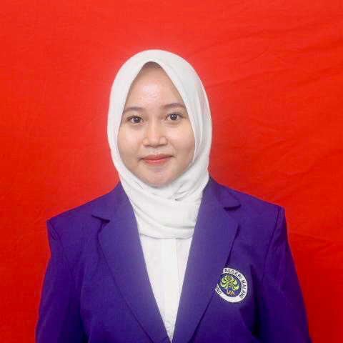

Catur Wahyu Sari Ayuningtyas

Tentang Saya
Perkenalkan nama saya Catur Wahyu Sari Ayuningtyas, biasa dipanggil Tyas. Saya adalah mahasiswi Universitas Negeri Malang, Program Studi Pendidikan Bahasa Mandarin. Sekarang saya sedang menempuh semester 5, dan sedang menjalani Program Studi Independen pada perusahaan SEAL.
Keahlian Saya
- MS Office
- Google Docs, Drive
- Canva
- Bahasa Indonesia (Penutur Asli)
- Bahasa Inggris (Menengah)
- Bahasa Mandarin (Pemula)
- Bahasa Korea (Pemula)
Pendidikan Saya
- Juli 2017 - Juli 2020 SMA NEGERI 2 PASURUAN
- September 2020 - Sekarang Universitas Negeri Malang
Kontak Saya
Instagram : @ayunngtyas_
portofolio